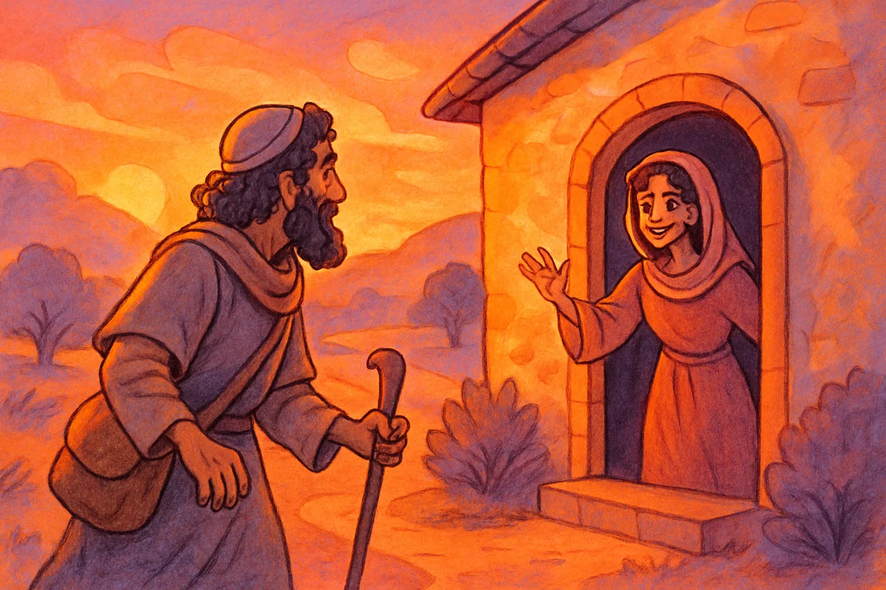

ק
הקול החמישי
מאגר חומרי הלימוד התורני · יהודה טאוב
📖 קטלוג
☰
📖 פרשת השבוע
📗 חומש
📜 נביא
⚖️ הלכה
📘 משנה
🕎 חגים ומועדים
🙏 הודיה ומזמור לתודה
🧑🏫 כלים למחנך
📕 ספרים
📚 מאמרים ונושאים
🌟 סיפורי תנאים וגדולי ישראל
🎮 משחקי לימוד ופעילויות
📚 קטלוגים
בית
‹
סיפורי אמונה וגבורה
‹
סיפורי צדיקים ואמונה
סיפורו של רבי עקיבא

לחצו כאן להיכנס למצגת
- עם מילות השיר
מצגת נוספת על הסיפור
- לא מתאים לגמרי למילות השיר